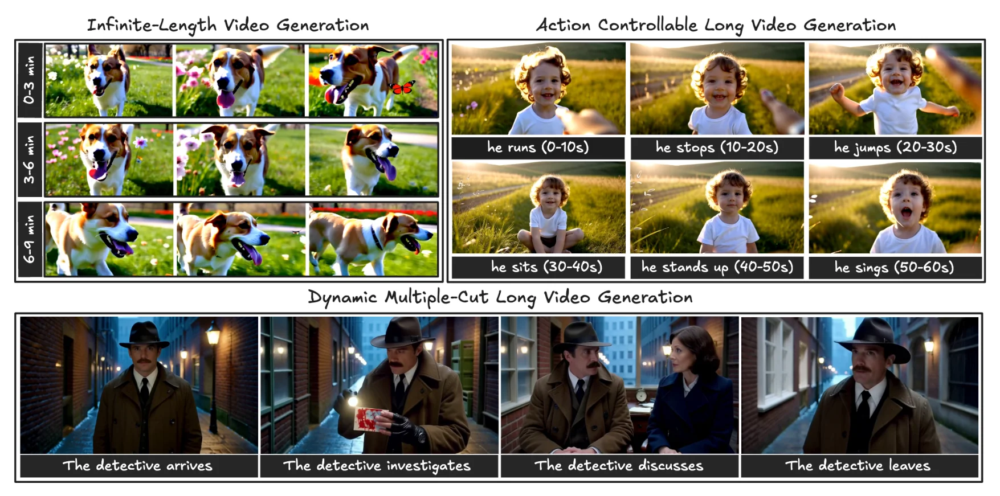
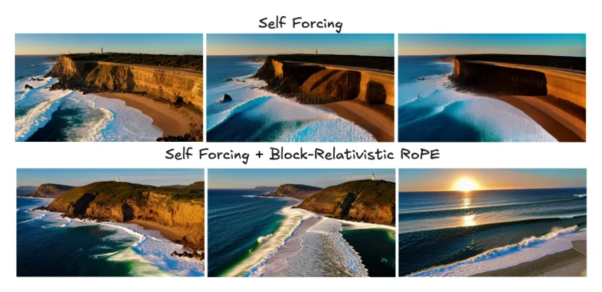
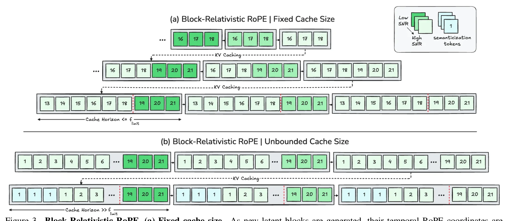
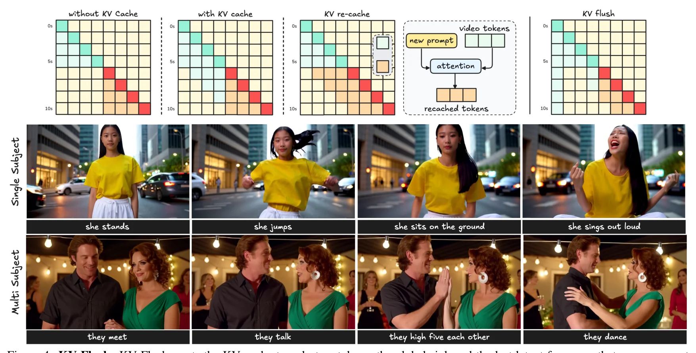
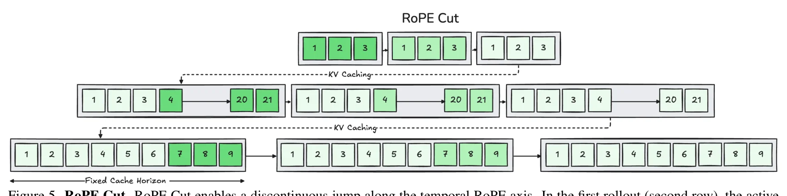
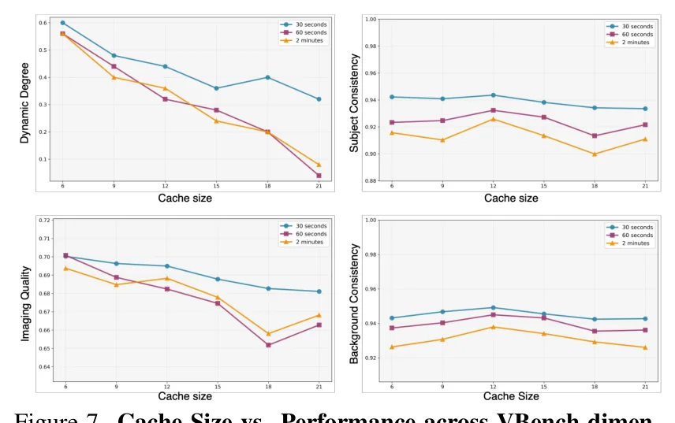
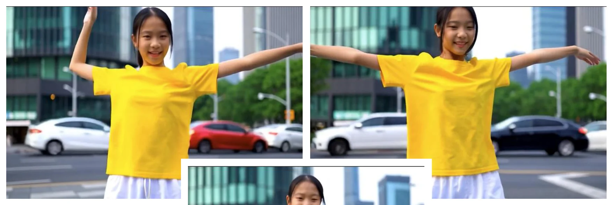
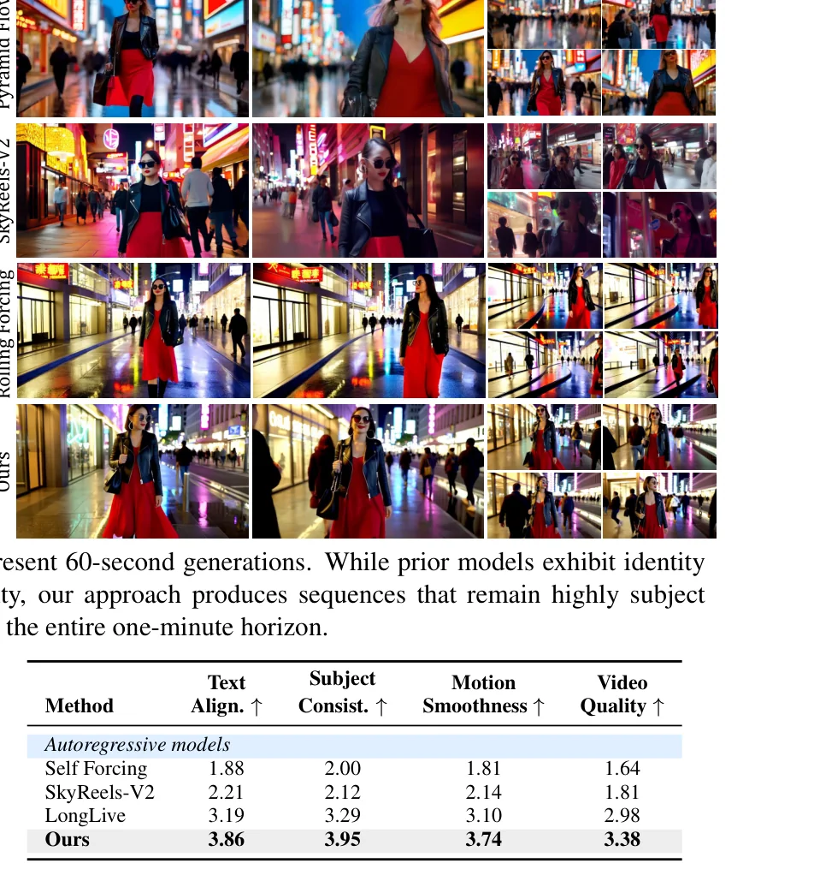
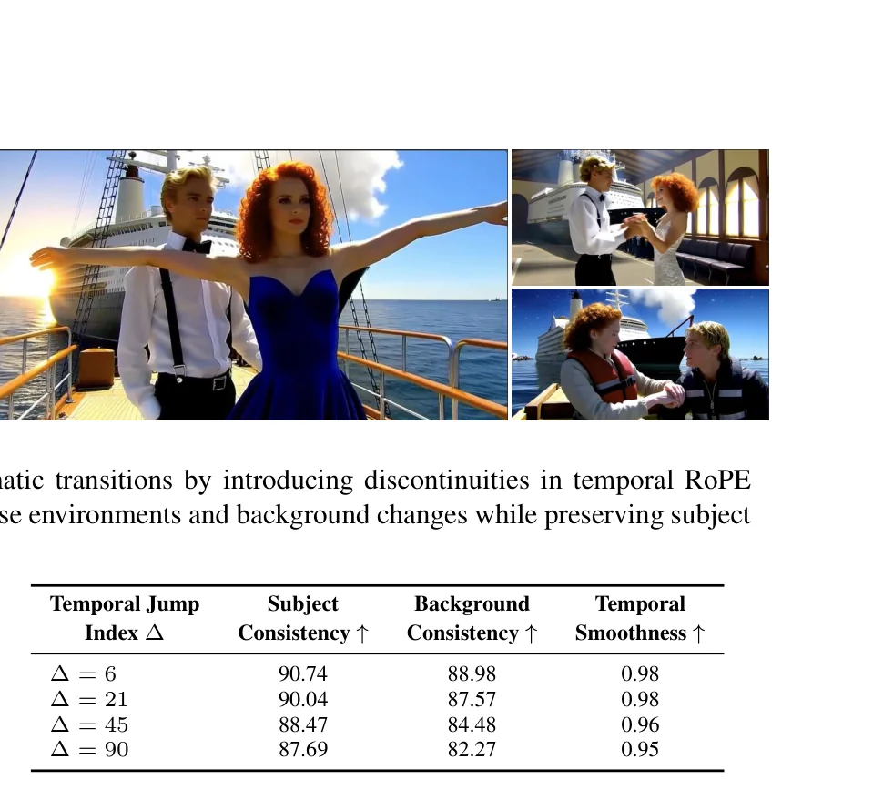
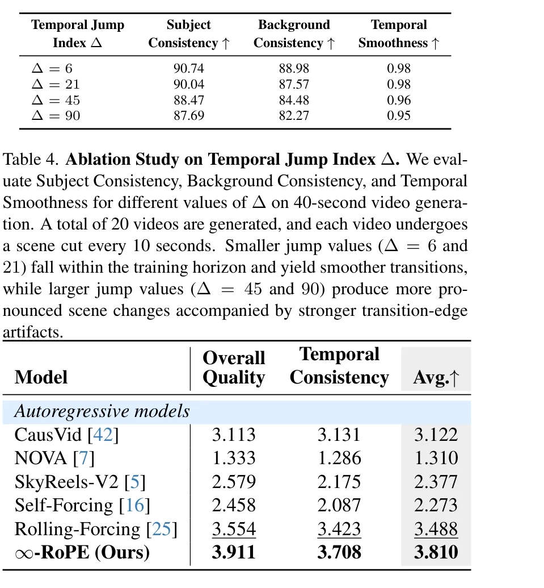

问题动机：自回归视频扩散的三重枷锁
视频扩散模型在过去几年取得了令人瞩目的进展——从早期的像素空间去噪器演进到基于 Transformer 的架构（Diffusion Transformer, DiT），实现了高分辨率、多镜头合成，显著缩小了合成视频与真实视频之间的质量差距。然而，现有模型仍然受限于较短的视频时长。
为突破时长限制，研究社区转向自回归视频生成框架——与时间的因果本质对齐。CausVid 首次将双向 DiT 蒸馏为因果学生模型；Self-Forcing 通过训练时自展开（self-rollout）消除了训练-测试不匹配；Self-Forcing++ 进一步将时域扩展至分钟级。尽管如此，这些自回归扩散方法仍受制于位置编码策略的根本性限制。

先前的方法通过更长的自展开训练（Self-Forcing++）或长视频数据重训练（SkyReels-V2）来扩展时域，但这些路线都面临指数级增长的计算成本。Infinity-RoPE 另辟蹊径：它不改变任何训练过程，而是从位置编码的相对论重构出发，在推理时突破 1024 帧的 RoPE 天花板。这一思路揭示了一个深刻洞察——短视野模型已经隐式地学会了无限时域生成的内在能力，只需正确的坐标系来释放它。
论文的核心问题是：仅通过相对论性的位置编码适配和训练无关的架构重参数化，能否克服这些瓶颈？答案是肯定的——5 秒短视频训练的 Self-Forcing 模型，在 Infinity-RoPE 的加持下，已经具备高度动态的无限时域生成能力。
Infinity-RoPE 的设计深受认知神经科学中"语义化"（Semanticization）过程的启发。人类大脑中，情景记忆（与特定时间和地点绑定的细节）会随时间推移逐渐丧失时空精度，但保留概念和自相关意义。类似地，当 KV 缓存超过模型视野时，早期帧的时间坐标坍缩为共享的语义锚点——保留了"发生了什么"而非"何时发生"，从而实现无限时域的语义一致性。

三大瓶颈：3D-RoPE 的视野牢笼
要理解 Infinity-RoPE 的设计动机，需要首先深入理解基础模型的技术栈。该方法建立在预训练的 Wan2.1-T2V-1.3B 之上（从 Wan2.1-T2V-14B 通过 Self-Forcing 蒸馏而来）。模型在 3D VAE 编码的潜在空间中操作：输入视频 $V \in \mathbb{R}^{F \times H \times W \times 3}$ 被编码为潜在张量 $x_0$，沿时间维度压缩 4 倍、沿每个空间维度压缩 8 倍。
3D-RoPE 的编码结构
Wan 模型采用 3D-RoPE 对 Query 和 Key token 的时间和空间坐标进行编码。对于位于坐标 $(f, h, w)$ 的 token，通道维度被分为三组分别对应时间、高度和宽度轴：
关键不在于 RoPE 公式本身在超出 1024 后失效，而在于模型从未在超出训练时域的位置索引上见过有效注意力模式。即使生成尚未达到 1024 帧的绝对上限，一旦超过模型实际训练时的短时域（例如 5 秒对应的 21 个潜在帧），模型就进入了未见的位置编码区域，注意力质量开始退化。这是一个训练数据分布问题，而非数学公式问题。
现有方案的局限
现有自回归扩散框架各有其局限：
核心方法（一）：Block-Relativistic RoPE
Block-Relativistic RoPE 是 Infinity-RoPE 的核心支柱。它将时间编码从"绝对坐标系"重构为"移动局部参考系"——每个新生成的潜在块相对于基础模型的最大视野 $f_{\text{limit}}$ 进行旋转，而早期块则反向旋转以保持相对时间几何。
固定缓存大小的情况
在基础模型训练于 5 秒短片（$f_{\text{limit}} = 21$ 个潜在帧）的设定下，生成以每块 3 个潜在帧的节奏推进，即 $B_f = \{f-2, f-1, f\}$。缓存满时，最老的 3 帧被驱逐并替换为新生成块。

Block-Relativistic RoPE 的命名直接映射自爱因斯坦的狭义相对论——不存在绝对的时间参考系，每个观察者的测量都相对于其局部参照系。类似地，这里不存在"第 N 帧"的绝对位置，每个块的时间坐标仅相对于当前缓存窗口的起始锚点 $f_0$ 定义。这种相对化操作是数学上完全精确的，因为它保持了所有帧对之间的相对位置差不变。
无界缓存与语义化
当 KV 缓存超出 $f_{\text{limit}}$ 时，时间编码必须从严格的时间体制过渡到语义抽象体制。受认知神经科学中语义化过程的启发，最早缓存的块被重映射为：
保留了之前帧中发生的事情（视觉-语义内容），而非确切的发生时间——映射了情景细节向去语境化知识的抽象过程。
系统的时域表示从情景阶段（帧顺序和时间占主导，精确的相对编码保持在当前活跃窗口 $B_i$ 内）演化到语义阶段（远期历史仅作为塑造持续生成的上下文先验而存在）。这种双阶段演化使时间轴可以无限扩展，同时在当前窗口内保持精确的相对编码。
核心方法（二）：KV Flush 动作控制
在自回归视频扩散中，在推理期间切换提示词（即动作可控生成）需要在即时语义响应性与时间连续性之间取得平衡。KV Flush 机制以恒定内存和零延迟执行缓存刷新——当新提示词到达时，除两个锚点外的所有缓存 token 被冲刷。
两个锚点分别是：全局汇聚潜在帧（稳定注意力归一化）和最后生成的潜在帧（保持局部时间连续性）。下一个动作直接基于这些最小锚点进行条件化，允许场景在运动中平滑演变的同时即时采用新语义。

KV Flush 的核心工程优势在于其极致的简洁性——"冲刷"操作在实现中只是对缓存结束索引的局部更新（local update to the cache end index），无需执行任何与缓存大小或动作转换次数成比例的计算。相比之下，LongLive 的 KV-Recache 需要在每次提示词切换时重建整个缓存，开销随缓存大小线性增长。
两个锚点的选择并非随意——全局汇聚帧（global sink）在注意力机制中扮演类似物理学中"参考系原点"的角色，稳定了所有帧的注意力归一化基线；最后生成帧则提供了运动连续性的"惯性参考"，确保新动作从当前状态平滑过渡而非凭空产生。这种双锚设计将"全局稳定性"与"局部连贯性"解耦，是方法成功的关键。
核心方法（三）：RoPE Cut 电影级场景切换
电影叙事通常需要突然的时间不连续性——场景切换、闪回、跨位置过渡——这些无法仅通过平滑的时间演化来表示。为在单次连续自回归生成中实现此类不连续性，论文引入了 RoPE Cut——一种训练无关的操作，对时间 RoPE 坐标执行受控的不连续跳跃。
其中 $\Delta$ 表示当前场景与下一场景之间的时间间隔。不沿时间索引顺序延伸，而是通过偏移 $\Delta$ 帧来切割和重锚时间 RoPE 相位。

Delta 消融分析
| 时间跳跃 Delta | 主体一致性 ↑ | 背景一致性 ↑ | 时间平滑度 ↑ |
|---|---|---|---|
| Delta = 6 | 90.74 | 88.98 | 0.98 |
| Delta = 21 | 90.04 | 87.57 | 0.98 |
| Delta = 45 | 88.47 | 84.48 | 0.96 |
| Delta = 90 | 87.69 | 82.27 | 0.95 |
消融揭示了一个清晰的分水岭效应：Delta=6 和 Delta=21 均位于模型训练视野内（$f_{\text{limit}}=21$），过渡几乎无瑕疵。而 Delta=45 和 90 超出视野后，背景一致性从 88.98 显著下降到 82.27，但主体一致性仍维持在 87.69 的高位。这表明模型在视野外的 RoPE 角度上需要外推，产生的"过渡边缘"是一种可预见的外推行为。
由于相对化表述，时间轴上不存在固定的或绝对的位置——坐标系本身随每次切割而移动。这意味着即使在大的时间或语义跳跃之后，角色身份仍可保持一致。因为生成系统从未"知道"自己处于绝对位置的哪里，它只知道当前块的相对关系，这正是身份保持的数学基础。
注意力机制的可解释性分析
为理解 Infinity-RoPE 如何构建长时域时间依赖关系，论文分析了帧到帧的自注意力图。第 13 层 DiT 的注意力图被可视化为头部平均、像素求和的形式，查询帧索引 $q$ 在 y 轴，键帧索引 $k$ 在 x 轴。

三种注意力模式分别对应三种时间结构：基线模式的锐利对角带表明相对化重锚成功保持了局部时间几何，每帧主要关注其近期前驱而非绝对距离；KV Flush 的注意力抑制实现了"语义隔离"——新动作不被旧上下文污染；RoPE Cut 的分裂模式则在数学上实现了"场景记忆的防火墙"——新段只与自身和全局汇聚交互，彻底切断了旧场景的时间影响。
贯穿所有三种注意力模式，一个关键的不变特征是早期时间汇聚列（early-time sink column）的持续存在。这个汇聚 token 在所有三种干预下都稳定地聚合了全局场景信息——它是注意力机制中的"永恒锚点"，无论发生缓存冲刷还是场景切割，这个汇聚列都保持活跃。这解释了为什么 Infinity-RoPE 能在激进的缓存操作下保持全局视觉连贯性。
实验评估：全面超越的量化证据
Infinity-RoPE 在 Self-Forcing 基础上实现——一个从 Wan2.1-T2V-1.3B 蒸馏的因果四步生成器，原生产出 5 秒、16 FPS、832x480 分辨率的视频。所有量化实验使用 KV 缓存大小为 6，起始索引 $f_0 = 21$，分类器无关引导尺度 3.0，时间步偏移 5.0。
长视频生成性能
| 模型 | 吞吐量 (FPS) | 美学质量 | 主体一致性 | 动态度 | 运动平滑度 | 整体 ↑ |
|---|---|---|---|---|---|---|
| 60 秒评估 | ||||||
| Self-Forcing | 17.01 | 0.5895 | 0.8360 | 0.32 | 0.9890 | 0.7715 |
| Rolling-Forcing | 17.01 | 0.6350 | 0.9409 | 0.36 | 0.9865 | 0.8146 |
| SkyReels-V2 | 0.49 | 0.5764 | 0.8499 | 0.44 | 0.9867 | 0.7768 |
| Infinity-RoPE | 17.01 | 0.6325 | 0.9444 | 0.52 | 0.9901 | 0.8298 |
| 240 秒评估 | ||||||
| CausVid | - | 0.6300 | 0.8399 | 0.36 | 0.9845 | 0.7758 |
| Rolling-Forcing | - | 0.6156 | 0.9080 | 0.40 | 0.9855 | 0.8017 |
| Infinity-RoPE | - | 0.6235 | 0.9256 | 0.64 | 0.9898 | 0.8309 |
动作控制用户研究
| 方法 | 文本对齐 ↑ | 主体一致性 ↑ | 运动平滑度 ↑ | 视频质量 ↑ |
|---|---|---|---|---|
| Self-Forcing | 1.88 | 2.00 | 1.81 | 1.64 |
| SkyReels-V2 | 2.21 | 2.12 | 2.14 | 1.81 |
| LongLive | 3.19 | 3.29 | 3.10 | 2.98 |
| Infinity-RoPE | 3.86 | 3.95 | 3.74 | 3.38 |
在 50 名参与者的大规模用户研究中，Infinity-RoPE 以 3.91 的整体质量和 3.71 的时间一致性（满分 5 分）显著超越最强基线 Rolling-Forcing（3.55 / 3.42）。更值得注意的是，在动作控制用户研究中，Infinity-RoPE 对 LongLive 的优势（文本对齐 3.86 vs 3.19）几乎完全归因于 KV Flush 的即时响应机制——LongLive 的 KV-Recache 在长序列中会累积旧提示词的嵌入残留。
与 LongLive 的深度对比




一个容易被忽视的关键数据点是吞吐量：Infinity-RoPE 保持了 17.01 FPS 的实时推理速度——与 Self-Forcing 和 Rolling-Forcing 完全相同，而 SkyReels-V2 仅 0.49 FPS，MAGI-1 仅 0.19 FPS。这意味着 Infinity-RoPE 获得了质量提升的同时，没有引入任何额外的推理开销。这正是"训练无关"设计理念的直接回报——所有额外操作（相对化重锚、KV 冲刷、RoPE 切割）都是 O(1) 复杂度的索引操作。
代码实现：关键算法的伪代码解析
以下代码块展示 Infinity-RoPE 三个核心组件的实现逻辑。这些代码基于论文公式和公开的 Self-Forcing 代码库推导编写，可信度标注为中等-高——核心逻辑与论文描述一致，但具体工程实现细节可能因框架差异而有所不同。
Block-Relativistic RoPE 时间坐标重映射
import torch import math def block_relativistic_rope( q: torch.Tensor, # [B, num_heads, S, head_dim] k: torch.Tensor, # [B, num_heads, S, head_dim] frame_indices: torch.Tensor, # [S] 当前块的绝对帧索引 f_limit: int = 21, # 教师模型最大视野 f0: int = 21, # 当前缓存窗口起始索引 cache_size: int = 6, # KV 缓存大小 ) -> tuple: """Block-Relativistic RoPE: 将绝对时间坐标转换为 相对于缓存窗口起始点 f0 的局部坐标。""" # 计算相对时间索引 def get_relative_indices(abs_indices, f0, f_limit): # 情况1: 在视野内，使用相对偏移 relative = torch.where( abs_indices <= f_limit, abs_indices, # 正常索引 f_limit - (f0 - abs_indices).clamp(min=0) # 重锚到 [f_limit-cache, f_limit] ) # 情况2: 超限语义化 - 远期帧坍缩 if abs_indices.max() > f_limit: semantic_mask = (abs_indices < f0 - f_limit) relative[semantic_mask] = 1 # 坍缩到 {1,1,1} return relative rel_indices = get_relative_indices(frame_indices, f0, f_limit) # 应用标准 RoPE 到相对索引 q_rotated = apply_rope_1d(q, rel_indices) k_rotated = apply_rope_1d(k, rel_indices) return q_rotated, k_rotated
KV Flush 缓存管理
class KVFlushCache: """KV Flush: 仅保留全局汇聚和最后帧的缓存管理器。""" def __init__(self, max_cache_size: int = 6): self.k_cache = None self.v_cache = None self.max_size = max_cache_size def flush(self): """执行 KV Flush: 仅保留两个锚点 token。""" if self.k_cache is None or self.k_cache.shape[2] < 2: return # 锚点 1: 全局汇聚 (第一个 token) sink_k = self.k_cache[:, :, 0:1, :] sink_v = self.v_cache[:, :, 0:1, :] # 锚点 2: 最后生成的潜在帧 last_k = self.k_cache[:, :, -1:, :] last_v = self.v_cache[:, :, -1:, :] # 仅保留两个锚点 self.k_cache = torch.cat([sink_k, last_k], dim=2) self.v_cache = torch.cat([sink_v, last_v], dim=2) def update(self, new_k, new_v): """追加新 token 并在缓存满时驱逐最旧帧。""" if self.k_cache is None: self.k_cache, self.v_cache = new_k, new_v return self.k_cache = torch.cat([self.k_cache, new_k], dim=2) self.v_cache = torch.cat([self.v_cache, new_v], dim=2) # 驱逐策略: 保留 sink + 最近的 (max_size-1) 个 token if self.k_cache.shape[2] > self.max_size: self.k_cache = torch.cat([ self.k_cache[:, :, 0:1], # 全局汇聚 self.k_cache[:, :, -(self.max_size-1):] # 最近帧 ], dim=2) self.v_cache = torch.cat([ self.v_cache[:, :, 0:1], self.v_cache[:, :, -(self.max_size-1):] ], dim=2)
RoPE Cut 场景切换操作
def rope_cut( current_block: torch.Tensor, # [B, 3, C, H, W] 当前 3 帧潜在块 f_current: int, # 当前帧的绝对索引 delta: int, # 时间跳跃偏移量 f_limit: int = 21, # 教师模型视野 ) -> dict: """RoPE Cut: 在时间 RoPE 坐标中引入受控不连续跳跃。 将 B_f = {f-2, f-1, f} 重映射为 B_{f->f+delta} = {f-2, f+delta-1, f+delta} 这实现了场景切换而不中断自回归生成流。 """ # 原始帧索引 original_indices = [f_current - 2, f_current - 1, f_current] # RoPE Cut 重映射 # 保留第一个帧作为局部锚点，后续帧跳跃 delta cut_indices = [ original_indices[0], # 锚: f-2 original_indices[0] + delta - 1, # 跳: f+delta-1 original_indices[0] + delta, # 跳: f+delta ] # 应用 Block-Relativistic 约束 # 确保映射后的索引在 f_limit 内有效 effective_indices = [ min(idx, f_limit) for idx in cut_indices ] return { "cut_indices": cut_indices, "effective_rope_indices": effective_indices, "delta": delta, "is_within_horizon": delta <= f_limit, } # 使用示例: 从室内场景切换到户外 result = rope_cut( current_block=latent_block, f_current=10, delta=21, # 在训练视野内的中等跳跃 ) # result["effective_rope_indices"] = [8, 20, 21] # 温和的场景切换，过渡边缘不明显
三段代码共同揭示了一个关键的工程特征——所有操作都是纯粹的索引重映射，不涉及任何额外的矩阵乘法或注意力计算。Block-Relativistic RoPE 仅修改传入 RoPE 函数的位置索引；KV Flush 仅对张量进行切片和拼接；RoPE Cut 仅改变帧索引的数值。这些操作的计算成本可以忽略不计，正是 Infinity-RoPE 能够保持 17.01 FPS 实时吞吐量的根本原因。
从软件架构角度，Infinity-RoPE 展示了一种优雅的插件式设计模式——三个组件完全独立于基础模型的内部结构，只需修改位置索引和缓存管理逻辑即可适配任何使用 3D-RoPE 的自回归视频扩散模型。论文明确指出该方法可以"以即插即用方式应用于现有 Self-Forcing 变体之上"，这种解耦设计为社区提供了一个可复用的推理时增强工具包。
总结与展望
- Block-Relativistic RoPE：将时间编码从绝对坐标重构为移动局部参考系，消除固定的时域限制，实现无限长度视频生成
- KV Flush：仅保留全局汇聚和最后帧两个锚点，以 O(1) 内存和零延迟实现即时提示词响应
- RoPE Cut：在时间坐标中引入受控不连续性，在单一 rollout 中实现电影级多镜头场景切换
- 训练无关设计：不修改任何训练过程，纯推理时框架，即插即用
- State-of-the-Art：在 VBench 的主体一致性、背景一致性、运动平滑度和动态度上全面超越现有方法
- 实时性能：保持 17.01 FPS 的实时推理速度，零额外计算开销
局限性分析
作为训练无关的方法，Infinity-RoPE 继承了基础模型的固有局限，如不完美的物理模拟。此外，当 RoPE Cut 的 Delta 超出训练视野时，会出现可见的过渡边缘——这是基础模型在未见 RoPE 角度上的外推行为，非方法本身的缺陷。
Infinity-RoPE 的相对化思想可能催生更深远的架构创新。当前方法仍受限于"块级离散化"——每 3 帧为一个操作单元。未来研究可以探索连续时间 RoPE——将相对化推广到连续时间流形上，实现帧级甚至亚帧级的精细时域控制。另一个有前景的方向是将语义化机制与长期记忆网络（如 MemoryTransformer）结合，构建层次化的时间记忆架构。
Infinity-RoPE 的成功提出了一个根本性的问题：我们对"模型容量"的理解是否过于保守？一个仅在 5 秒视频上训练的模型，通过纯推理时的坐标变换就能生成 4 分钟的高质量视频——这意味着模型在训练过程中隐式地学到了远超其训练数据时域的通用视觉动力学。这一发现对模型评估、训练策略和能力边界的研究都有深远影响。
开放科研问题
理论分析：Block-Relativistic RoPE 通过将绝对坐标映射到局部参考系来突破时域限制，但这种映射不可避免地会损失绝对位置信息。从信息论角度，语义化阶段将远期帧的时间坐标坍缩为共享最小索引，等价于一个有损压缩过程。关键问题是：这个压缩过程的率失真边界是什么？是否存在一个理论下限，使得低于该限的压缩会导致生成质量的不可逆退化？
调查方向：构建一个可控的信息瓶颈实验，逐步增加语义化比例（从 0% 到 100% 的远期帧坍缩），测量生成质量的退化曲线，寻找相变点。与 Rate-Distortion Theory 建立形式化联系。
理论分析：当前方法专注于时间维度的相对化，空间维度仍使用固定编码。但在大场景 3D 生成（如 NeRF、3DGS）中，空间位置也面临类似的外推限制。将 Block-Relativistic 思想推广到空间轴，需要解决空间不连续性比时间更敏感的问题——空间中的"场景切割"可能导致几何断裂。
调查方向：在 3D 场景生成模型（如基于 Transformer 的 NeRF 预测器）中实现空间 Block-Relativistic RoPE，评估空间语义化对几何一致性的影响。探索"空间 KV Flush"是否能实现局部场景的即时切换。
理论分析：KV Flush 通过丢弃除两个锚点外的所有缓存来实现即时响应，但这意味着丢弃了大量视觉-语义信息。在多动作序列（如站立 → 跳跃 → 坐下 → 唱歌）中，每次 Flush 都会丢失前一个动作的上下文。是否可以设计一个轻量级的语义摘要模块，在 Flush 前提取并压缩旧上下文的关键语义信息？
调查方向：设计一个 2-3 层的轻量 Transformer，在 Flush 前将旧 KV 缓存压缩为 1-3 个"语义摘要 token"。对比纯 Flush vs 摘要辅助 Flush 在长动作序列上的文本对齐和主体一致性。分析摘要 token 的最优数量与信息保真度的权衡曲线。
理论分析：实验观察到的"早期时间汇聚列"在所有三种干预模式下都保持稳定——它聚合了全局场景信息且不受缓存操作影响。这一现象与 LLM 中的 Attention Sink 现象高度相似。但尚不清楚：这个汇聚列是模型训练过程中自发涌现的，还是 3D-RoPE 的特定结构诱导产生的？如果移除这个汇聚列，Infinity-RoPE 的性能会退化多少？
调查方向：系统性消融汇聚列的影响——逐步将其注意力权重从 1.0 衰减到 0.0，观察长视频生成质量的退化模式。在不同层（第 1 层到第 28 层）分析汇聚列的空间分布和功能分化。与 LLM 的 Attention Sink 研究建立理论联系。
理论分析：KV Flush 的即时响应特性和零计算开销使 Infinity-RoPE 天然适合实时交互场景。但当前方法是纯生成式的——用户只能通过提示词控制新内容，无法对已有帧进行编辑。如果将 Infinity-RoPE 与图像/视频编辑模型（如基于 InstructPix2Pix 的方法）结合，是否能实现"边生成边编辑"的实时交互视频创作流程？
调查方向：构建一个交互式原型系统：用户通过自然语言提示控制视频流（生成 + 编辑混合模式）。测量端到端延迟（从提示词输入到视觉响应）。评估编辑操作是否会破坏 Block-Relativistic RoPE 的时间几何一致性。探索"局部 RoPE Cut + 全局 RoPE 连续"的混合编辑模式。